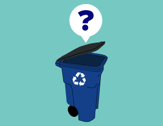

Apps Developed by the Community
Community volunteers use civic hacking to build a government of the people, by the people, and for the people. Austin-area designers and developers have been working on new apps that address civic needs. Here are a few examples.
ATX Scores
"How can I find a restaurant's health inspection scores?" ATX Scores provides an easy-to-use interface to search the City of Austin open data portal for restaurant inspection scores. The in-browser app uses the data portal's query API.
Data provided by City of Austin/Travis County Health Department.
Austin Recycles
"When do we put our bins out?" is one of the most common questions Austin Resource Recovery receives. Austin Recycles helps you find out your next trash, recycling – even brush and bulky pickup dates.
Data provided by City of Austin, Austin Resource Recovery department.
VoteATX

"Where is the best place to vote right now?"
Voters have numerous options and the best choice isn't always obvious – and may vary from day to day during the early voting period.
This mobile-friendly, responsive web app helps you find the best choices for polling locations.
Data provided by Travis County Clerk and Travis County Tax Assessor-Collector.